## synchronization | **atomic instructions** ## **operating systems** ### csci 3411 ### Prof. **Sibin Mohan** <br> _<font size="5"> acknowledgments: some content modified from Silberschatz et al. and West</font>_ --- so far we've seen... --- ||| | --- | --- | | **goal** | critical sections to protect **shared** data structures | --- ||| | --- | --- | | **goal** | critical sections to protect **shared** data structures | | **software** solutions | Peterson's, Bakery Algorithms <br> → **shared data** to protect shared data | || --- ### software critical sections | **cost** - lots of **spinning** → waiting for access --- ### software critical sections | **cost** - lots of **spinning** → waiting for access - <scb>O(N)</scb> memory and CPU [<scb>N</scb> = number of threads] --- ### software critical sections | **cost** bakery algorithm → **two** arrays of size <scb>N</scb> --- ### software critical sections | **cost** bakery algorithm → **two** arrays of size <scb>N</scb> <p>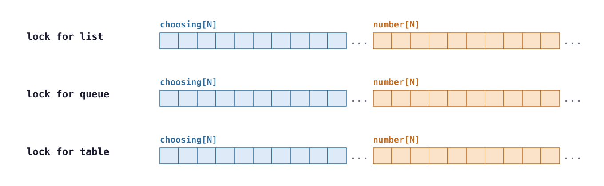</p> --- ### software critical sections | **cost** <div class="multicolumn" style="display: grid; grid-template-columns: 40% 60%; gap: 20px; align-items: center;"> <div> </div> <div> bakery → **two** arrays of size <scb>N</scb>... - ...for **every** critical section! </div> </div> --- ### software critical sections | **cost** <div class="multicolumn" style="display: grid; grid-template-columns: 40% 60%; gap: 20px; align-items: center;"> <div> </div> <div> bakery → **two** arrays of size <scb>N</scb>... - ...for **every** critical section! - far too **expensive** in practice </div> </div> --- hardware, please come **save** us! --- ### hardware support ||| | --- | --- | | 1. **disable interrupts** | no preemption on **this** core <br> [<scb>spinlock.c</scb>] | --- ### hardware support ||| | --- | --- | | 1. **disable interrupts** | no preemption on **this** core <br> [<scb>spinlock.c</scb>] | | 2. **atomic instructions** | no preemption **within** one instruction <br> [on **any** core] | || --- ## disable/enable **interrupts** --- ### disable/enable interrupts two x86 instructions |instruction| action | effect | | :---: | --- | --- | | <scb>cli</scb> | **clear** interrupt flag | interrupts **off** | --- ### disable/enable interrupts two x86 instructions |instruction| action | effect | | :---: | --- | --- | | <scb>cli</scb> | **clear** interrupt flag | interrupts **off** | | <scb>sti</scb> | **set** interrupt flag | interrupts **on** | || --- ### **EFLAGS** | **IF** bit --- ### **EFLAGS** | **IF** bit single bit in <scb>EFLAGS</scb> status register → <scb>IF</scb> (bit <scb>9</scb>) <p>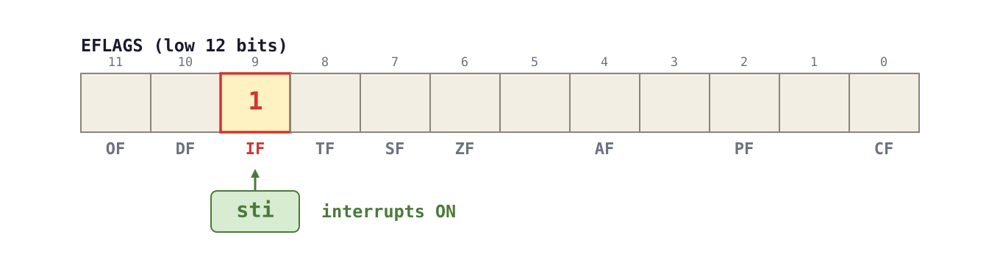</p> --- single bit in <scb>EFLAGS</scb> status register → <scb>IF</scb> (bit <scb>9</scb>) <p>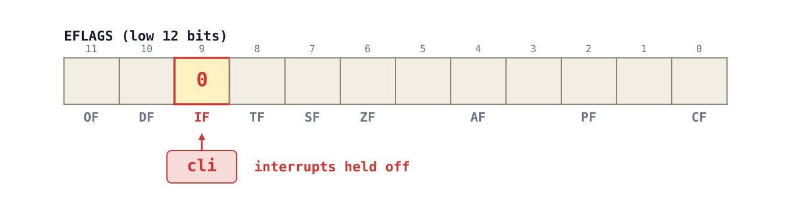</p> --- ### **EFLAGS** | **IF** bit ||| | --- | --- | | <scb>IF = 1</scb> | CPU checks for interrupts **every** cycle <br> → triggers ISR | --- ### **EFLAGS** | **IF** bit | <scb>IF</scb> value| action | triggers ISR? | | :---: | :---: | :---: | | <scb>1</scb> | CPU checks for interrupts **every** cycle | yes | | <scb>0</scb> | interrupts **delayed** until <scb>IF</scb> is set again | no | || --- <scb>sti</scb> → interrupts that arrived meanwhile **fire right then** --- ### <scb>cli</scb>/<scb>sti</scb> are **privileged** instructions only **kernel** can call them --- ### <scb>cli</scb>/<scb>sti</scb> are **privileged** instructions only **kernel** can call them why must they be **privileged**? --- ### <scb>cli</scb>/<scb>sti</scb> are **privileged** instructions why must they be **privileged**? - if used in user code → <scb>cli</scb> + infinite loop! - **timer** interrupt never fires → kernel never gets the CPU back! --- ### <scb>cli</scb>/<scb>sti</scb> are **privileged** instructions why must they be **privileged**? - if used in user code → <scb>cli</scb> + infinite loop! - **timer** interrupt never fires → kernel never gets the CPU back! - the timer → our **escape hatch** --- let's look at <scb>xv6</scb>... <scb>x86.h</scb> --- ### <scb>xv6</scb> | <scb>x86.h</scb> ```C static inline void cli(void) { asm volatile("cli"); } static inline void sti(void) { asm volatile("sti"); } ``` --- ### <scb>xv6</scb> | <scb>x86.h</scb> ```C [4|10] static inline void cli(void) { asm volatile("cli"); } static inline void sti(void) { asm volatile("sti"); } ``` --- ### <scb>xv6</scb> | <scb>x86.h</scb> C wrappers around **single** instructions → inline assembly --- let's look at <scb>xv6</scb>... <scb>spinlock.c</scb> --- ### <scb>xv6</scb> | <scb>pushcli()</scb>/<scb>popcli()</scb> ```C void pushcli(void) { int eflags; eflags = readeflags(); cli(); if(mycpu()->ncli == 0) mycpu()->intena = eflags & FL_IF; mycpu()->ncli += 1; } void popcli(void) { if(readeflags()&FL_IF) panic("popcli - interruptible"); if(--mycpu()->ncli < 0) panic("popcli"); if(mycpu()->ncli == 0 && mycpu()->intena) sti(); } ``` --- ### <scb>xv6</scb> | <scb>pushcli()</scb>/<scb>popcli()</scb> ```C [6|7|8-9|10|16-17|18|20-21] void pushcli(void) { int eflags; eflags = readeflags(); cli(); if(mycpu()->ncli == 0) mycpu()->intena = eflags & FL_IF; mycpu()->ncli += 1; } void popcli(void) { if(readeflags()&FL_IF) panic("popcli - interruptible"); if(--mycpu()->ncli < 0) panic("popcli"); if(mycpu()->ncli == 0 && mycpu()->intena) sti(); } ``` --- ### <scb>xv6</scb> | <scb>pushcli()</scb>/<scb>popcli()</scb> ```C void pushcli(void) { int eflags; eflags = readeflags(); cli(); if(mycpu()->ncli == 0) mycpu()->intena = eflags & FL_IF; mycpu()->ncli += 1; } void popcli(void) { if(readeflags()&FL_IF) panic("popcli - interruptible"); if(--mycpu()->ncli < 0) panic("popcli"); if(mycpu()->ncli == 0 && mycpu()->intena) sti(); } ``` --- ### <scb>xv6</scb> | <scb>struct cpu</scb> <scb>proc.h</scb> → per-CPU state used by <scb>pushcli()</scb>/<scb>popcli()</scb> ```C struct cpu { uchar apicid; // Local APIC ID ... int ncli; // Depth of pushcli nesting. int intena; // Were interrupts enabled before pushcli? struct proc *proc; // The process running on this cpu or null }; ``` --- ### <scb>xv6</scb> | <scb>struct cpu</scb> <scb>proc.h</scb> → per-CPU state used by <scb>pushcli()</scb>/<scb>popcli()</scb> ```C [4|5] struct cpu { uchar apicid; // Local APIC ID ... int ncli; // Depth of pushcli nesting. int intena; // Were interrupts enabled before pushcli? struct proc *proc; // The process running on this cpu or null }; ``` --- ### <scb>xv6</scb> | <scb>pushcli()</scb>/<scb>popcli()</scb> --- ### <scb>xv6</scb> | <scb>pushcli()</scb>/<scb>popcli()</scb> - **nested** <scb>cli</scb>s → count them in <scb>ncli</scb> [per CPU] --- ### <scb>xv6</scb> | <scb>pushcli()</scb>/<scb>popcli()</scb> - **nested** <scb>cli</scb>s → count them in <scb>ncli</scb> [per CPU] - remember if interrupts were on → <scb>intena</scb> --- ### <scb>xv6</scb> | <scb>pushcli()</scb>/<scb>popcli()</scb> - **nested** <scb>cli</scb>s → count them in <scb>ncli</scb> [per CPU] - remember if interrupts were on → <scb>intena</scb> - **last** <scb>popcli()</scb> - re-enable with <scb>sti</scb> - **only** if they were on to begin with --- critical sections → need some sort of "_locking_"/"_unlocking_" --- ## critical sections | **disable interrupts** --- ### critical sections | **disable interrupts** ```C while (1) { lock(&lock); // cli critical_section(); unlock(&lock); // sti normal_processing(); } ``` --- ### critical sections | **disable interrupts** ```C [2|4] while (1) { lock(&lock); // cli critical_section(); unlock(&lock); // sti normal_processing(); } `` --- ### critical sections | **disable interrupts** ```C while (1) { lock(&lock); // cli critical_section(); unlock(&lock); // sti normal_processing(); } ``` --- ### critical sections | **disable interrupts** - <scb>lock</scb>/<scb>unlock</scb> → a **lock** (or **mutex**) abstraction --- ### critical sections | **disable interrupts** - <scb>lock</scb>/<scb>unlock</scb> → a **lock** (or **mutex**) abstraction - implement them as <scb>cli</scb>/<scb>sti</scb>... simple! --- but...what's the **catch**? --- ### <scb>cli</scb>/<scb>sti</scb> | **cons** core <scb>0</scb> disables interrupts... <p>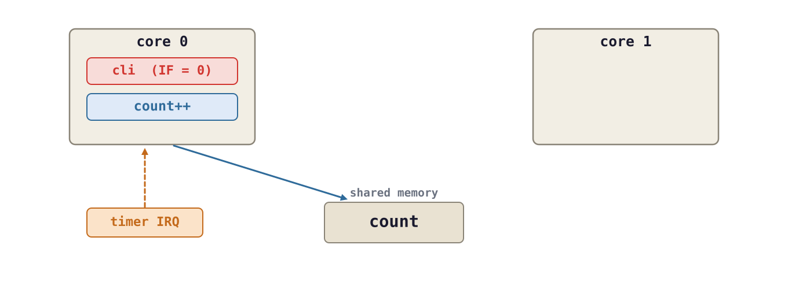</p> --- ### <scb>cli</scb>/<scb>sti</scb> | **cons** ...timer interrupt held off... <p>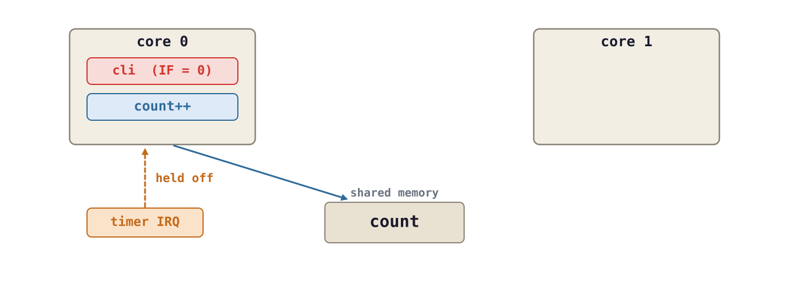</p> --- ### <scb>cli</scb>/<scb>sti</scb> | **cons** ...but core <scb>1</scb> never ran <scb>cli</scb>! <p>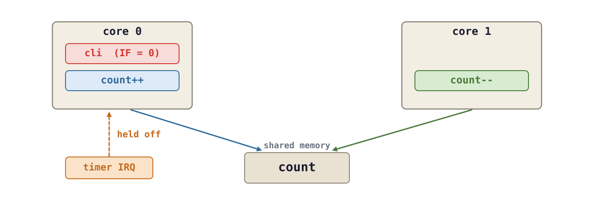</p> --- ### <scb>cli</scb>/<scb>sti</scb> | **cons** - only works on **single core** --- ### <scb>cli</scb>/<scb>sti</scb> | **cons** - only works on **single core** - handles **concurrency**, not **parallelism** --- ### <scb>cli</scb>/<scb>sti</scb> | **cons** - only works on **single core** - handles **concurrency**, not **parallelism** - only in the **kernel** [privileged!] --- <scb>cli</scb>/<scb>sti</scb> → only protects **one** core... --- <scb>cli</scb>/<scb>sti</scb> → only protects **one** core... ...need something that works **across** cores! --- ## atomic instructions --- ### atomic instructions - a single(ish) **ISA instruction** that combines, --- ### atomic instructions - a single(ish) **ISA instruction** that combines, - **load** - manipulation of data - optional conditional logic - **store** --- ### atomic instructions - a single(ish) **ISA instruction** that combines, - **load** - manipulation of data - optional conditional logic - **store** <br> <br> <center><div class="center" data-id="box" style="height: 75px; width: 775px; background: orange;"> all carried out <b>atomically!</b> </div></center> --- ### atomic instructions - all carried out **atomically**! - no **preemption** between these operations --- ### atomic instructions - all carried out **atomically**! - no **preemption** between these operations - no **other core** can interleave with them --- ### atomic instructions implemented with **cache coherency** in hardware <br> <br> ### _e.g._ x86 [<scb>lock</scb> prefix](https://www.felixcloutier.com/x86/lock) --- ### atomic instructions let's look at some C code-based **logic** --- ### atomic instructions let's look at some C code-based **logic** **note**: real thing → **one** instruction! --- ## fetch & add [<scb>faa</scb>] --- ### fetch & add [<scb>faa</scb>] consider this <sc>C</sc> "implementation"... ```C int faa(int *mem, int add) { int init = *mem; // load *mem = init + add; // operation + store return init; // previous value } ``` --- ### fetch & add [<scb>faa</scb>] ```C [3|4|5] int faa(int *mem, int add) { int init = *mem; // load *mem = init + add; // operation + store return init; // previous value } ``` --- ### fetch & add [<scb>faa</scb>] ```C int faa(int *mem, int add) { int init = *mem; // load *mem = init + add; // operation + store return init; // previous value } ``` - **all** of this is atomic! --- ### fetch & add | **remember** - **all** of this is atomic! - no other core can see an **intermediate** value --- ### fetch & add | **remember** - **all** of this is atomic! - no other core can see an **intermediate** value - no interrupt can preempt us in **middle** of <scb>faa</scb> --- ### fetch & add | **remember** - **all** of this is atomic! - no other core can see an **intermediate** value - no interrupt can preempt us in the **middle** of <scb>faa</scb> - two cores doing <scb>faa</scb> → effectively **one after the other** --- ### fetch & add | **in x86** <scb>__sync_fetch_and_add()</scb> → <scb>i686-linux-gnu-gcc -O1 -S</scb> ```x86asm faa: movl 4(%esp), %edx movl 8(%esp), %eax lock xaddl %eax, (%edx) ret ``` --- ### fetch & add | **in x86** <scb>__sync_fetch_and_add()</scb> → <scb>i686-linux-gnu-gcc -O1 -S</scb> ```x86asm faa: movl 4(%esp), %edx movl 8(%esp), %eax lock xaddl %eax, (%edx) ret ``` --- ### fetch & add | **in x86** ||| | --- | --- | | [<scb>xaddl</scb>](https://www.felixcloutier.com/x86/xadd) | e**x**change and **add** | --- ### fetch & add | **in x86** ||| | --- | --- | | [<scb>xaddl</scb>](https://www.felixcloutier.com/x86/xadd) | e**x**change and **add** | | <scb>lock</scb> prefix | makes it **atomic** across cores | || --- ### fetch & add | **racy vs. atomic** plain <scb>count++</scb>/<scb>count--</scb> → load, add, store **interleave** <p>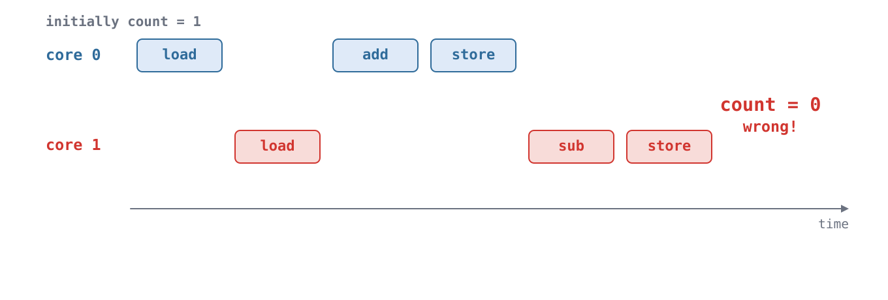</p> --- ### fetch & add | **racy vs. atomic** <scb>lock xaddl</scb> → each update is **indivisible** <p>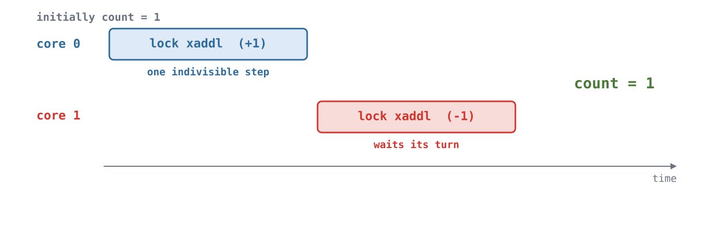</p> --- ### fetch & add | **racy vs. atomic** <div class="multicolumn" style="display: grid; grid-template-columns: 40% 60%; gap: 20px; align-items: center;"> <div> </div> <div> |||| | --- | --- | --- | | core <scb>0</scb> [**<font color="blue">blue</font>**] | <scb>count++</scb> | <scb>lock xaddl [+1]</scb> | | core <scb>1</scb> [**<font color="red">red</font>**] | <scb>count--</scb> | <scb>lock xaddl [-1]</scb> | || </div> </div> <br> result → <scb>count = 1</scb>, always --- ## fetch & add | **counter** --- ### fetch & add | **counter** ||| | --- | --- | | <scb>counter_inc(*cnt)</scb> | <scb>faa(cnt, 1);</scb> | --- ### fetch & add | **counter** ||| | --- | --- | | <scb>counter_inc(*cnt)</scb> | <scb>faa(cnt, 1);</scb> | | <scb>counter_dec(*cnt)</scb> | <scb>faa(cnt, -1);</scb> | || --- let's look at a `code` example... the counter from **last** lecture, now atomic --- ### fetch & add | **atomic counter** ```C #include <pthread.h> #include <stdio.h> int counter = 0; // shared void *worker(void *arg) { for (int i = 0; i < 1000000; i++) __sync_fetch_and_add(&counter, 1); // atomic fetch & add return NULL; } int main(void) { pthread_t t[2]; for (int i = 0; i < 2; i++) pthread_create(&t[i], NULL, worker, NULL); for (int i = 0; i < 2; i++) pthread_join(t[i], NULL); printf("counter = %d\n", counter); return 0; } ``` --- ### fetch & add | **atomic counter** ```C [4|7-8|14-15|16-17|18] #include <pthread.h> #include <stdio.h> int counter = 0; // shared void *worker(void *arg) { for (int i = 0; i < 1000000; i++) __sync_fetch_and_add(&counter, 1); // atomic fetch & add return NULL; } int main(void) { pthread_t t[2]; for (int i = 0; i < 2; i++) pthread_create(&t[i], NULL, worker, NULL); for (int i = 0; i < 2; i++) pthread_join(t[i], NULL); printf("counter = %d\n", counter); return 0; } ``` --- ### fetch & add | **atomic counter** ```C #include <pthread.h> #include <stdio.h> int counter = 0; // shared void *worker(void *arg) { for (int i = 0; i < 1000000; i++) __sync_fetch_and_add(&counter, 1); // atomic fetch & add return NULL; } int main(void) { pthread_t t[2]; for (int i = 0; i < 2; i++) pthread_create(&t[i], NULL, worker, NULL); for (int i = 0; i < 2; i++) pthread_join(t[i], NULL); printf("counter = %d\n", counter); return 0; } ``` --- ### fetch & add | **atomic counter** what should <scb>counter</scb> be at the end? ```C void *worker(void *arg) { for (int i = 0; i < 1000000; i++) __sync_fetch_and_add(&counter, 1); // atomic fetch & add return NULL; } ``` remember → <scb>2</scb> threads running --- ### fetch & add | **counter** two threads, <scb>1,000,000</scb> increments each ||| | --- | --- | | plain <scb>counter++</scb> | <scb>counter = 1028607</scb> → **wrong** | --- ### fetch & add | **counter** two threads, <scb>1,000,000</scb> increments each ||| | --- | --- | | plain <scb>counter++</scb> | <scb>counter = 1028607</scb> → **wrong** | | <scb>__sync_fetch_and_add</scb> | <scb>counter = 2000000</scb> → **<span style="background-color: darkred; color: white;"> every </span>** run | || Note: - actual runs (8-core Linux box). --- ## fetch & add | **reference counts** --- ### reference counts - **manual** garbage collection! --- ### reference counts - **manual** garbage collection! - count **references** (pointers) to an object --- ### reference counts - **manual** garbage collection! - count **references** (pointers) to an object - no references left → **free** it --- ### reference counts used **everywhere** → Linux kernel, xv6, ... --- ### reference counts ||| | --- | --- | | <scb>ref_take(*rc)</scb> | <scb>faa(rc, 1);</scb> | --- ### reference counts ||| | --- | --- | | <scb>ref_take(*rc)</scb> | <scb>faa(rc, 1);</scb> | | <scb>ref_release(*rc)</scb> | <scb>return faa(rc, -1) == 1;</scb> | || --- ### reference counts why compare to **1**? --- ### reference counts why compare to **1**? - <scb>faa</scb> returns the value **before** the decrement - was <scb>1</scb> → **we** removed the last reference → **we** free it! --- ### reference counts three references to the node <p>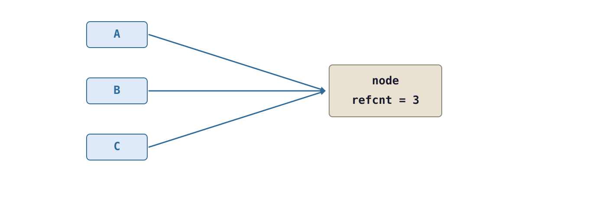</p> --- ### reference counts one released... <p>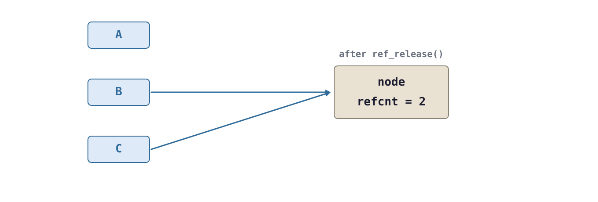</p> --- ### reference counts ...another... <p>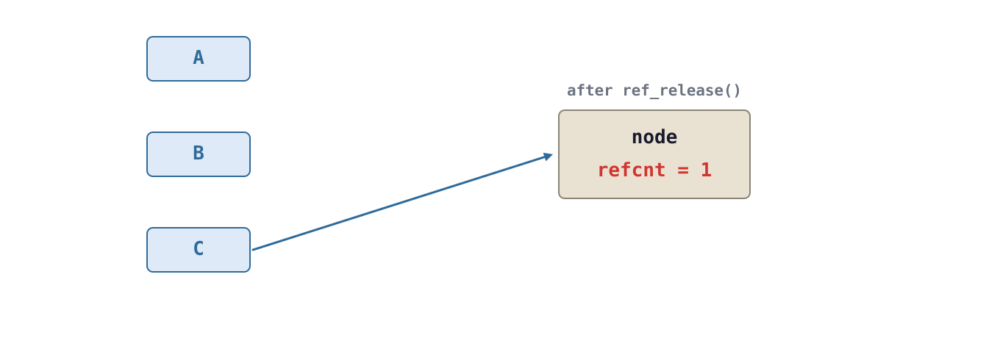</p> --- ### reference counts last one released → free the memory! <p>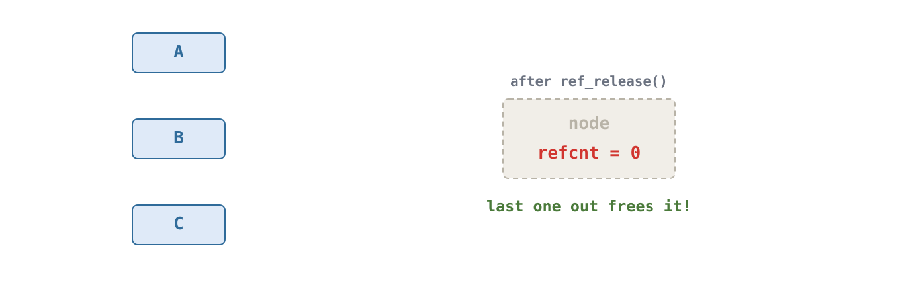</p> --- let's look at <scb>xv6</scb>... <scb>file.c</scb> --- ### <scb>xv6</scb> | <scb>fileclose()</scb> ```C void fileclose(struct file *f) { ... acquire(&ftable.lock); ... if(--f->ref > 0){ release(&ftable.lock); return; } ff = *f; f->ref = 0; ... release(&ftable.lock); ... ``` --- ### <scb>xv6</scb> | <scb>fileclose()</scb> ```C [5|7|12] void fileclose(struct file *f) { ... acquire(&ftable.lock); ... if(--f->ref > 0){ release(&ftable.lock); return; } ff = *f; f->ref = 0; ... release(&ftable.lock); ... ``` --- ### <scb>xv6</scb> | <scb>fileclose()</scb> ```C void fileclose(struct file *f) { ... acquire(&ftable.lock); ... if(--f->ref > 0){ release(&ftable.lock); return; } ff = *f; f->ref = 0; ... release(&ftable.lock); ... ``` --- ### <scb>xv6</scb> | <scb>fileclose()</scb> --- ### <scb>xv6</scb> | <scb>fileclose()</scb> - open files are **reference counted** (<scb>dup</scb>, <scb>fork</scb>) --- ### <scb>xv6</scb> | <scb>fileclose()</scb> - open files are **reference counted** (<scb>dup</scb>, <scb>fork</scb>) - xv6 protects <scb>ref</scb> with a **lock**, not <scb>faa</scb> --- ### <scb>xv6</scb> | <scb>fileclose()</scb> - open files are **reference counted** (<scb>dup</scb>, <scb>fork</scb>) - xv6 protects <scb>ref</scb> with a **lock**, not <scb>faa</scb> - last reference → actually **close** the file --- ## test & set --- ### test & set ```C bool test_and_set(bool *mem) { bool b = *mem; // load *mem = true; // store return b; // previous value } ``` --- ### test & set ```C [3|4|5] bool test_and_set(bool *mem) { bool b = *mem; // load *mem = true; // store return b; // previous value } ``` --- ### test & set ```C bool test_and_set(bool *mem) { bool b = *mem; // load *mem = true; // store return b; // previous value } ``` <br> **all** of this is atomic! --- ## mutual exclusion | **test & set** --- ### mutual exclusion | **test & set** ```C // lock: shared, initially false while (1) { while (test_and_set(&lock)) ; critical_section(); lock = false; normal_processing(); } ``` --- ### mutual exclusion | **test & set** ```C [3|5] // lock: shared, initially false while (1) { while (test_and_set(&lock)) ; critical_section(); lock = false; normal_processing(); } ``` --- ### mutual exclusion | **test & set** ```C // lock: shared, initially false while (1) { while (test_and_set(&lock)) ; critical_section(); lock = false; normal_processing(); } ``` --- ### mutual exclusion | **test & set** |lock value| <scb>t&s</scb> sets| return | action | | --- | --- | --- | ---- | | <scb>false</scb> | <scb>lock = true</scb> | <scb>false</scb> | **enter**! | --- ### mutual exclusion | **test & set** |lock value| <scb>t&s</scb> sets| return | action | | --- | --- | --- | ---- | | <scb>false</scb> | <scb>lock = true</scb> | <scb>false</scb> | **enter**! | | <scb>true</scb> | <scb>lock = true</scb> <br> [no change] | <scb>true</scb> | **spin** | || --- ### mutual exclusion | **test & set** thread <scb>1</scb>: <scb>xchg</scb> returns <scb>0</scb> → it's in! <p>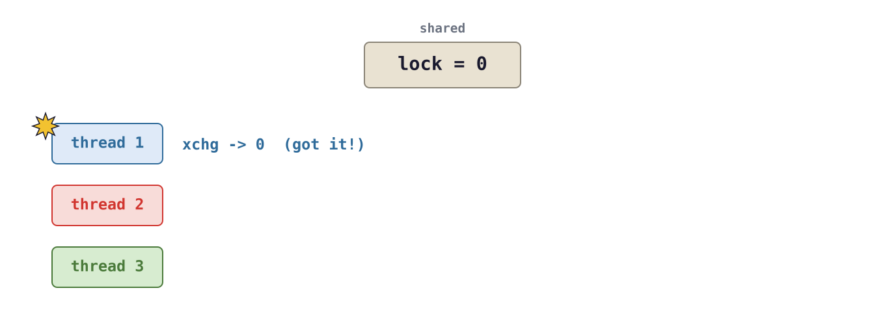</p> --- ### mutual exclusion | **test & set** threads <scb>2</scb>, <scb>3</scb>: <scb>xchg</scb> returns <scb>1</scb> → spin <p>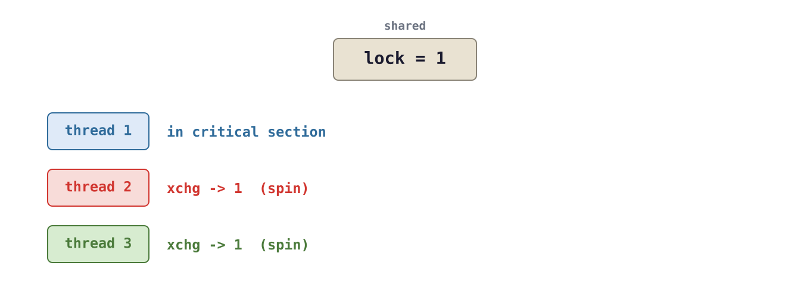</p> --- ### mutual exclusion | **test & set** thread <scb>1</scb> releases → <scb>lock = 0</scb>... who's next? <p>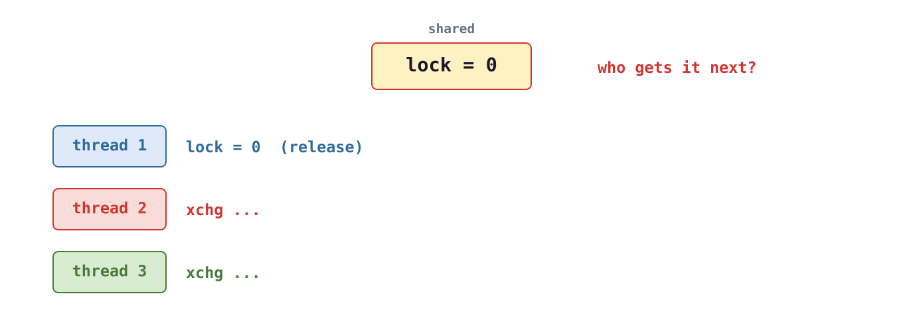</p> --- ### mutual exclusion | **test & set** **any** spinner can win <p>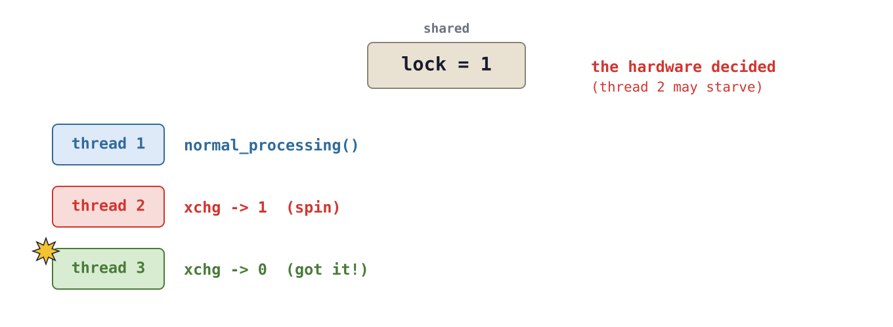</p> --- ### mutual exclusion | **test & set** <div class="multicolumn" style="display: grid; grid-template-columns: 40% 60%; gap: 20px; align-items: center;"> <div> </div> <div> ||| | --- | --- | | thread <scb>1</scb> <br> [**<font color="blue">blue</font>**] | got lock **first** | | thread <scb>3</scb> <br> [**<font color="green">green</font>**] | won the **next** race | | thread <scb>2</scb><br> [**<font color="red">red</font>**] | still spinning → may **starve** | || </div> </div> --- problems with this solution? let's look at our <scb>3</scb> criteria for critical sections... --- ### test & set | **criteria** |||| | --- | --- | --- | | mutual exclusion | **yes** | only **one** <scb>t&s</scb> sees <scb>false</scb> | --- ### test & set | **criteria** |||| | --- | --- | --- | | mutual exclusion | **yes** | only **one** <scb>t&s</scb> sees <scb>false</scb> | | progress | **yes** | CS empty → first <scb>t&s</scb> gets in | --- ### test & set | **criteria** |||| | --- | --- | --- | | mutual exclusion | **yes** | only **one** <scb>t&s</scb> sees <scb>false</scb> | | progress | **yes** | CS empty → first <scb>t&s</scb> gets in | | bounded waiting | **no**! | **hardware** picks winner! | || --- ### test & set | common **trade-offs** - simple and **fast** - fine when **few threads** contend for lock --- ok, we have test & set... --- ok, we have test & set... ...how does **xv6** build a lock from it? --- ## <scb>xv6</scb> | **spinlocks** --- ### test & set | **in x86** <scb>__sync_lock_test_and_set()</scb> → [<scb>xchg</scb>](https://www.felixcloutier.com/x86/xchg) (atomic **swap**) ```x86asm [3] test_and_set: movl $1, %eax xchgl lock, %eax ret ``` --- ### test & set | **in x86** lock is just <scb>{0, 1}</scb> → **swap in** <scb>1</scb>, get old value → test & set! --- ### <scb>xv6</scb> | <scb>x86.h</scb> ```C static inline uint xchg(volatile uint *addr, uint newval) { uint result; // The + in "+m" denotes a read-modify-write operand. asm volatile("lock; xchgl %0, %1" : "+m" (*addr), "=a" (result) : "1" (newval) : "cc"); return result; } ``` --- ### <scb>xv6</scb> | <scb>x86.h</scb> ```C [7|11] static inline uint xchg(volatile uint *addr, uint newval) { uint result; // The + in "+m" denotes a read-modify-write operand. asm volatile("lock; xchgl %0, %1" : "+m" (*addr), "=a" (result) : "1" (newval) : "cc"); return result; } ``` --- ### <scb>xv6</scb> | <scb>x86.h</scb> ```C static inline uint xchg(volatile uint *addr, uint newval) { uint result; // The + in "+m" denotes a read-modify-write operand. asm volatile("lock; xchgl %0, %1" : "+m" (*addr), "=a" (result) : "1" (newval) : "cc"); return result; } ``` --- let's look at <scb>xv6</scb>... <scb>spinlock.c</scb> --- ### <scb>xv6</scb> | <scb>acquire()</scb>/<scb>release()</scb> ```C void acquire(struct spinlock *lk) { pushcli(); // disable interrupts to avoid deadlock. if(holding(lk)) panic("acquire"); // The xchg is atomic. while(xchg(&lk->locked, 1) != 0) ; __sync_synchronize(); ... } void release(struct spinlock *lk) { ... __sync_synchronize(); asm volatile("movl $0, %0" : "+m" (lk->locked) : ); popcli(); } ``` --- ### <scb>xv6</scb> | <scb>acquire()</scb>/<scb>release()</scb> ```C [4|5-6|9-10|12|20|21|23] void acquire(struct spinlock *lk) { pushcli(); // disable interrupts to avoid deadlock. if(holding(lk)) panic("acquire"); // The xchg is atomic. while(xchg(&lk->locked, 1) != 0) ; __sync_synchronize(); ... } void release(struct spinlock *lk) { ... __sync_synchronize(); asm volatile("movl $0, %0" : "+m" (lk->locked) : ); popcli(); } ``` --- ### <scb>xv6</scb> | <scb>acquire()</scb>/<scb>release()</scb> ```C void acquire(struct spinlock *lk) { pushcli(); // disable interrupts to avoid deadlock. if(holding(lk)) panic("acquire"); // The xchg is atomic. while(xchg(&lk->locked, 1) != 0) ; __sync_synchronize(); ... } void release(struct spinlock *lk) { ... __sync_synchronize(); asm volatile("movl $0, %0" : "+m" (lk->locked) : ); popcli(); } ``` --- ### <scb>xv6</scb> | <scb>struct spinlock</scb> <scb>spinlock.h</scb> ```C // Mutual exclusion lock. struct spinlock { uint locked; // Is the lock held? // For debugging: char *name; // Name of lock. struct cpu *cpu; // The cpu holding the lock. uint pcs[10]; // The call stack (an array of program counters) // that locked the lock. }; ``` --- ### <scb>xv6</scb> | <scb>struct spinlock</scb> <scb>spinlock.h</scb> ```C [3|6-9] // Mutual exclusion lock. struct spinlock { uint locked; // Is the lock held? // For debugging: char *name; // Name of lock. struct cpu *cpu; // The cpu holding the lock. uint pcs[10]; // The call stack (an array of program counters) // that locked the lock. }; ``` --- ### <scb>xv6</scb> | <scb>acquire()</scb>/<scb>release()</scb> --- ### <scb>xv6</scb> | <scb>acquire()</scb>/<scb>release()</scb> ||| | --- | --- | | <scb>pushcli()</scb> | interrupts **off** on this core <br> [ISR on this core may want same lock!] | --- ### <scb>xv6</scb> | <scb>acquire()</scb>/<scb>release()</scb> ||| | --- | --- | | <scb>pushcli()</scb> | interrupts **off** on this core <br> [ISR on this core may want same lock!] | | <scb>xchg</scb> loop | test & set → **other cores** spin | --- ### <scb>xv6</scb> | <scb>acquire()</scb>/<scb>release()</scb> ||| | --- | --- | | <scb>pushcli()</scb> | interrupts **off** on this core <br> [ISR on this core may want same lock!] | | <scb>xchg</scb> loop | test & set → **other cores** spin | | <scb>__sync_synchronize()</scb> | **fence** → no loads/stores move across it | --- ### <scb>xv6</scb> | <scb>acquire()</scb>/<scb>release()</scb> ||| | --- | --- | | <scb>pushcli()</scb> | interrupts **off** on this core <br> [ISR on this core may want same lock!] | | <scb>xchg</scb> loop | test & set → **other cores** spin | | <scb>__sync_synchronize()</scb> | **fence** → no loads/stores move across it | | <scb>movl $0</scb> + <scb>popcli()</scb> | release lock → interrupts back **on** | || --- ### <scb>xv6</scb> | **spinlocks** <scb>cli</scb> **and** atomics → both **concurrency** and **parallelism**! --- ## atomic instructions | **summary** --- ### atomic instructions | **summary** ||| | --- | --- | | building block | for more complicated **synchronization primitives** | --- ### atomic instructions | **summary** ||| | --- | --- | | building block | for more complicated **synchronization primitives** | | vs. software | avoid <scb>O(N)</scb> costs | --- ### atomic instructions | **summary** ||| | --- | --- | | building block | for more complicated **synchronization primitives** | | vs. software | avoid <scb>O(N)</scb> costs | | bounded waiting | generally **given up** <br> (but not always: **ticket locks**!) | --- ### atomic instructions | **summary** ||| | --- | --- | | building block | for more complicated **synchronization primitives** | | vs. software | avoid <scb>O(N)</scb> costs | | bounded waiting | generally **given up** <br> (but not always: **ticket locks**!) | | used | on **every** system | || --- ### atomic instructions | **comparison** | instruction | x86 | used for | |---|---|---| | fetch & add | [<scb>lock xaddl</scb>](https://www.felixcloutier.com/x86/xadd) | counters, reference counts, ticket locks | | test & set | [<scb>xchg</scb>](https://www.felixcloutier.com/x86/xchg) | spinlocks (xv6 <scb>acquire()</scb>) | | compare & swap | [<scb>lock cmpxchg</scb>](https://www.felixcloutier.com/x86/cmpxchg) | lock-free data structures | || --- ## bonus | **for your curiosity** --- ### bonus | **lock-free** - **lock-free** algorithms → synchronization **without** locks --- ### bonus | **lock-free** - **lock-free** algorithms → synchronization **without** locks - for **some** data structures --- ### bonus | **lock-free** - **lock-free** algorithms → synchronization **without** locks - for **some** data structures - can be **faster** --- ### bonus | **lock-free** - **lock-free** algorithms → synchronization **without** locks - for **some** data structures - can be **faster** - often need a more **expressive** atomic instruction... --- <scb>faa</scb>, <scb>t&s</scb> → **fixed** operations... --- <scb>faa</scb>, <scb>t&s</scb> → **fixed** operations... ...need something more **general** --- ## compare & swap (<scb>cas</scb>) --- ### compare & swap (<scb>cas</scb>) simple statement, **confusing** code --- let's look at the english language description... --- ### compare & swap (<scb>cas</scb>) - if memory holds what we **think** it holds - update it to hold **another** value --- ### compare & swap (<scb>cas</scb>) - if memory holds what we **think** it holds - update it to hold **another** value - return: - **true** → if update is made - **false** → otherwise --- ### compare & swap let's look at the <sc>C</sc> pseudocode... ```C bool cas(int *mem, int val, int newval) { if (*mem != val) return false; // load + conditional *mem = newval; // store return true; } /* all of this is atomic! */ ``` --- ### compare & swap ```C [3|4|5] bool cas(int *mem, int val, int newval) { if (*mem != val) return false; // load + conditional *mem = newval; // store return true; } /* all of this is atomic! */ ``` --- ### compare & swap ```C bool cas(int *mem, int val, int newval) { if (*mem != val) return false; // load + conditional *mem = newval; // store return true; } /* all of this is atomic! */ ``` --- ### compare & swap | **in x86** <scb>__sync_bool_compare_and_swap()</scb> → [<scb>lock cmpxchg</scb>](https://www.felixcloutier.com/x86/cmpxchg) ```x86asm cas: movl 4(%esp), %eax movl 8(%esp), %edx lock cmpxchgl %edx, counter sete %al movzbl %al, %eax ret ``` --- ## <scb>cas</scb> | **counter** --- ### <scb>cas</scb> | **counter** 1. read <scb>counter</scb> (a **normal** load) --- ### <scb>cas</scb> | **counter** 1. read <scb>counter</scb> (a **normal** load) 2. if <scb>counter</scb> still holds what we read... --- ### <scb>cas</scb> | **counter** 1. read <scb>counter</scb> (a **normal** load) 2. if <scb>counter</scb> still holds what we read... 3. ...update it to hold value <scb>+ 1</scb> --- ### <scb>cas</scb> | **counter** 1. read <scb>counter</scb> (a **normal** load) 2. if <scb>counter</scb> still holds what we read... 3. ...update it to hold value <scb>+ 1</scb> 4. **repeat** if the update is not made --- ### <scb>cas</scb> | **counter** ```C [2|3] while (1) { val = *counter; if (cas(counter, val, val + 1)) break; } ``` --- ### <scb>cas</scb> | **counter** ```C while (1) { val = *counter; if (cas(counter, val, val + 1)) break; } ``` --- ### <scb>cas</scb> | **counter** why can <scb>cas</scb> **fail**? --- why can <scb>cas</scb> **fail**? - preemption **between** → load and CAS - another thread → changed <scb>counter</scb> meanwhile --- ### <scb>cas</scb> | **retry loop** both threads read <scb>val = 5</scb> <p>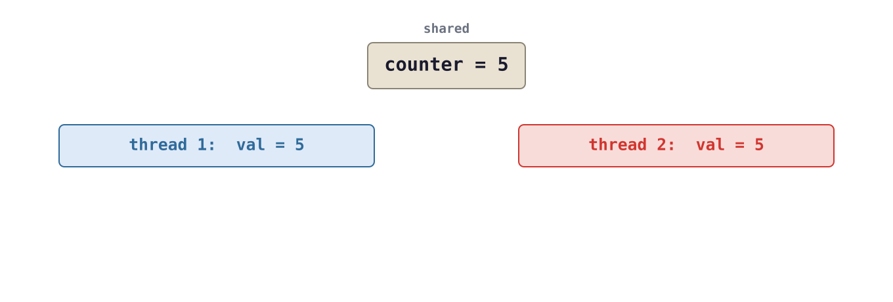</p> --- ### <scb>cas</scb> | **retry loop** thread <scb>1</scb>: CAS succeeds → <scb>counter = 6</scb> <p>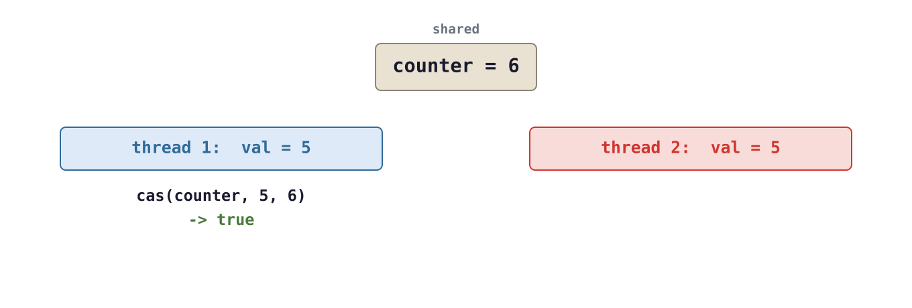</p> --- ### <scb>cas</scb> | **retry loop** thread <scb>2</scb>: CAS **fails** → <scb>counter</scb> isn't <scb>5</scb> anymore <p>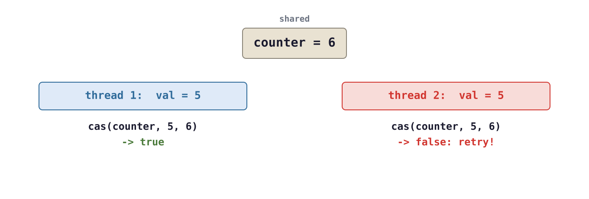</p> --- ### <scb>cas</scb> | **retry loop** thread <scb>2</scb> retries → reads <scb>6</scb> → CAS succeeds <p>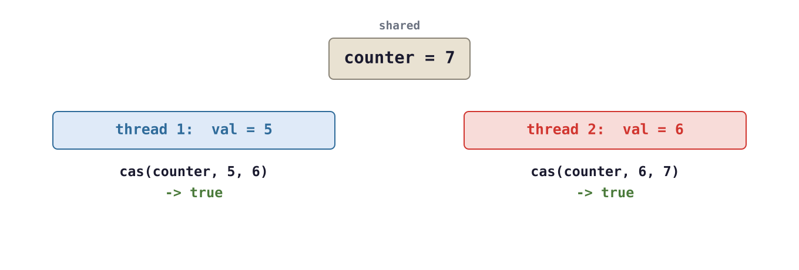</p> --- ## <scb>cas</scb> | **lock** --- ### <scb>cas</scb> | **lock** ```C [2|4] /* spin while CS is held, or while lock == false and our cas fails */ while (!cas(&lock, false, true)) ; critical_section(); lock = false; normal_processing(); ``` --- ### <scb>cas</scb> | **lock** ||| | --- | --- | | <scb>lock == false</scb> | → <scb>lock = true</scb> <br> return **true** → enter | --- ### <scb>cas</scb> | **lock** |lock value|lock set as|return|action| | --- | --- | ---- | ---- | | <scb>false</scb> | <scb>true</scb> | <scb>true</scb> | **<span style="background-color: darkred; color: white;"> enter </span>** | | <scb>true</scb> | not set | <scb>false</scb> | **<span style="background-color: darkred; color: white;"> loop! </span>** | || Note: - the original slide says lock == true -> return true; the lecture points out it should be false. --- ### CAS | **very general** - arbitrary logic between **load** and <scb>cas</scb> --- ### CAS | **very general** - arbitrary logic between **load** and <scb>cas</scb> - typically needs a **retry loop** → prevents **bounded waiting** --- ## lock-free | **push** --- ### lock-free | **push** a **stack** → no locks, many threads pushing **at once**! --- ### lock-free | **push** ```C struct list *head; push(struct list *to_add): struct list *tmp; /* spin while someone else modified head */ do { tmp = head; to_add->next = tmp; } while (!cas(&head, tmp, to_add)); ``` --- ### lock-free | **push** ```C [7|8|9] struct list *head; push(struct list *to_add): struct list *tmp; /* spin while someone else modified head */ do { tmp = head; to_add->next = tmp; } while (!cas(&head, tmp, to_add)); ``` --- ### lock-free | **push** ```C struct list *head; push(struct list *to_add): struct list *tmp; /* spin while someone else modified head */ do { tmp = head; to_add->next = tmp; } while (!cas(&head, tmp, to_add)); ``` --- ### lock-free | **push** 1. thread 1 → <scb>tmp = head</scb> (<scb>A</scb>), <scb>X->next = A</scb> <p>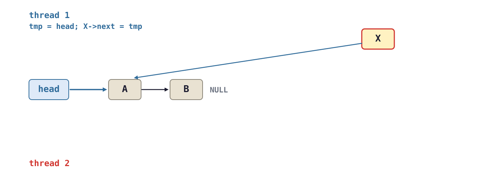</p> --- ### lock-free | **push** 2. thread 2 preempts → prepares <scb>Y</scb> <p>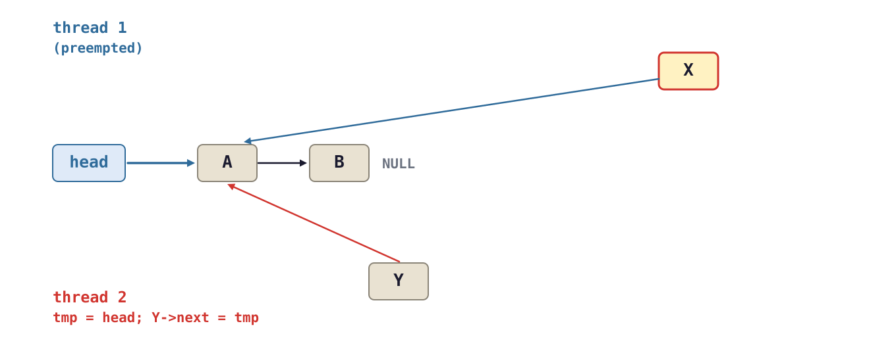</p> --- ### lock-free | **push** 3. thread 2's <scb>cas</scb> succeeds → <scb>head = Y</scb> <p>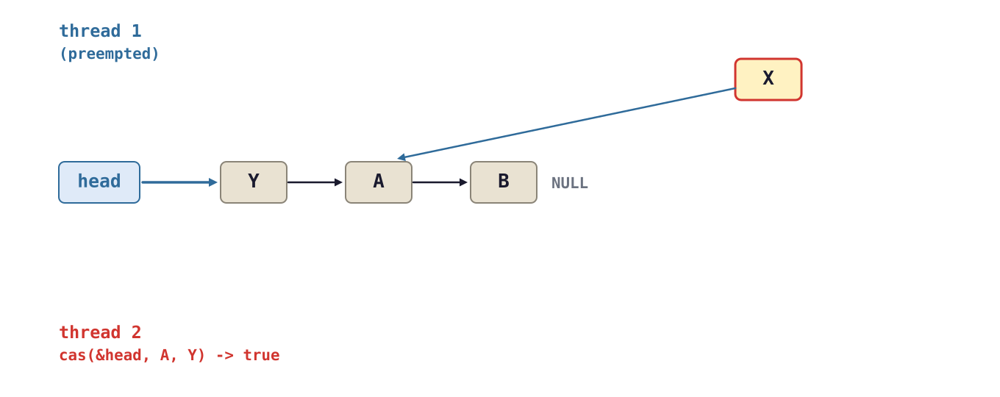</p> --- ### lock-free | **push** 4. thread 1's <scb>cas</scb> **fails** → <scb>head</scb> isn't <scb>A</scb> anymore <p>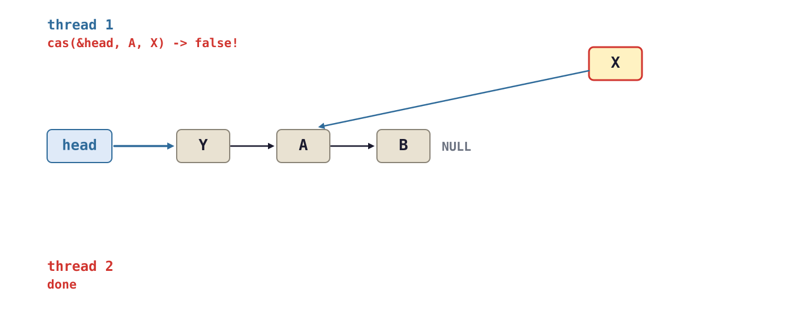</p> --- ### lock-free | **push** 5. thread 1 retries → <scb>tmp = Y</scb>, <scb>X->next = Y</scb> <p>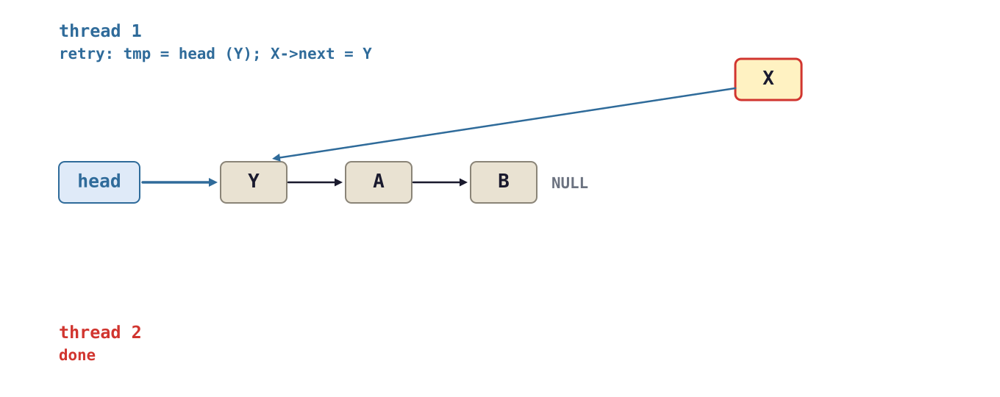</p> --- ### lock-free | **push** 6. thread 1's <scb>cas</scb> succeeds → <scb>head = X</scb> <p>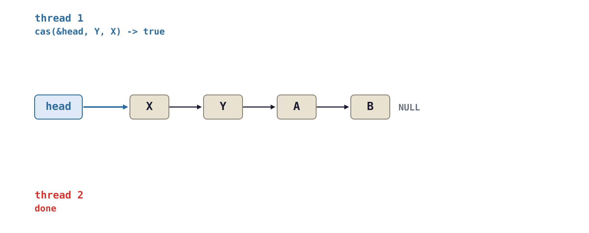</p> --- ### lock-free | **push** remember this? <p>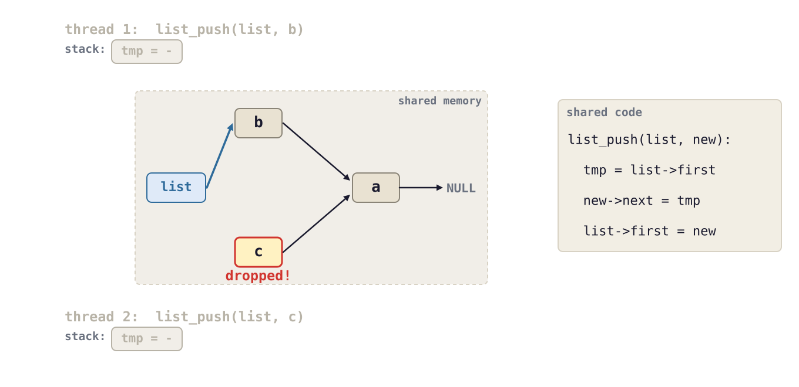</p> --- ### lock-free | **push** remember this? - list we **broke** with race → safe with **no critical section!** --- ### lock-free | **push** - list we **broke** with race → safe with **no critical section!** - only **atomic instruction** serializes --- but...what's the **catch**? --- ### lock-free | **cons** - **not** a general solution → only **some** data structures --- ### lock-free | **cons** - **not** a general solution → only **some** data structures - usually those updated through **one** word (like <scb>head</scb>) --- ### lock-free | **cons** - **not** a general solution → only **some** data structures - usually those updated through **one** word (like <scb>head</scb>) - **advanced** → rarely what you should reach for --- exercise → write the lock-free **pop**! --- ## ticket locks | **bounded waiting** --- ### ticket locks fetch & add **with** bounded waiting! --- ### ticket locks ```C struct ticketlock { volatile int next, serving; }; void lock(struct ticketlock *l) { int me = __sync_fetch_and_add(&l->next, 1); // take a ticket while (l->serving != me) ; // wait for our number } void unlock(struct ticketlock *l) { l->serving++; // call the next number } ``` --- ### ticket locks ```C [4|5|8] struct ticketlock { volatile int next, serving; }; void lock(struct ticketlock *l) { int me = __sync_fetch_and_add(&l->next, 1); // take a ticket while (l->serving != me) ; // wait for our number } void unlock(struct ticketlock *l) { l->serving++; // call the next number } ``` --- ### ticket locks take a ticket → wait for your number <p>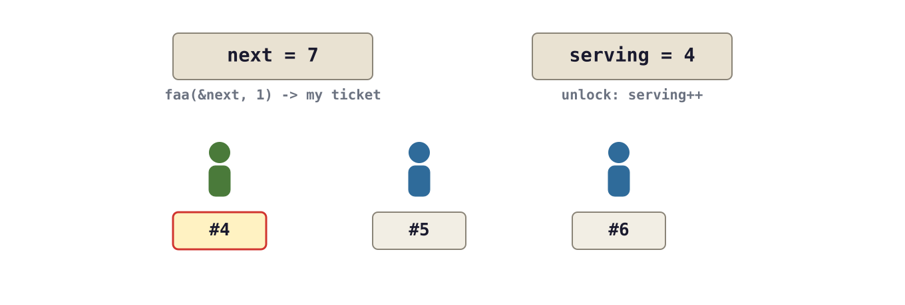</p> --- ### ticket locks release → call the **next** number <p>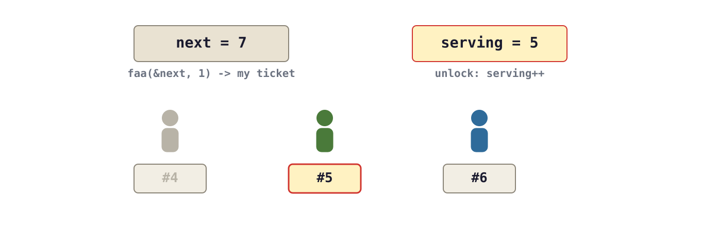</p> --- ### ticket locks - served in **ticket order** → first come, first served --- ### ticket locks - served in **ticket order** → first come, first served - **bounded** waiting! --- ### ticket locks - served in **ticket order** → first come, first served - **bounded** waiting! - like the bakery algorithm... but <scb>O(1)</scb> [see [ticket lock (wikipedia)](https://en.wikipedia.org/wiki/Ticket_lock)] Note: - ticket_lock.c compiles with i686-linux-gnu-gcc -O1 -Wall; Linux used ticket spinlocks on x86 for years. --- **next topic** → synchronization abstractions built on these atomics